- Desmonte el conjunto de la caja de cambios, del vehículo. Consulte el apartado "Conjunto de la caja de cambios" en esta sección.
- Monte el conjunto de la caja de cambios en su soporte, utilizando el Dispositivo para reparación de la caja de cambios automática DW260-021-02 (81-40 LE).
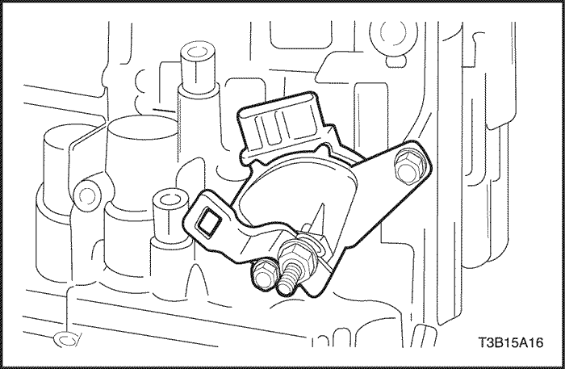


- Retire la tuerca, arandela y palanca de control.
- Suelte la arandela de seguridad con un destornillador.
- Desmonte los dos tornillos y tuercas, y tire del selector de gama de transmisión (TR).
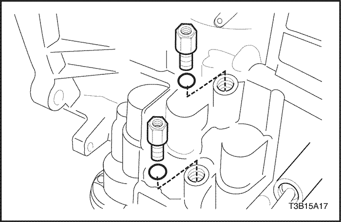
- Desmonte las dos conexiones de racor, de la carcasa de la caja de cambios.
- Desmonte las dos juntas tóricas, de las conexiones de racor.
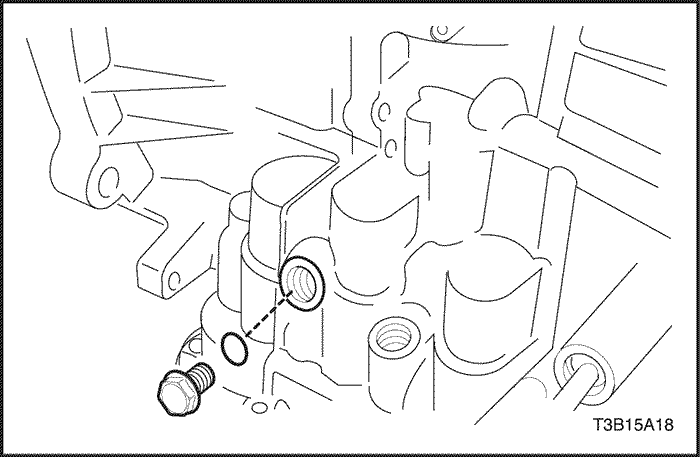
- Desmote el tapón roscado, de la carcasa de la caja de cambios.
- Retire la junta tórica del tapón roscado.
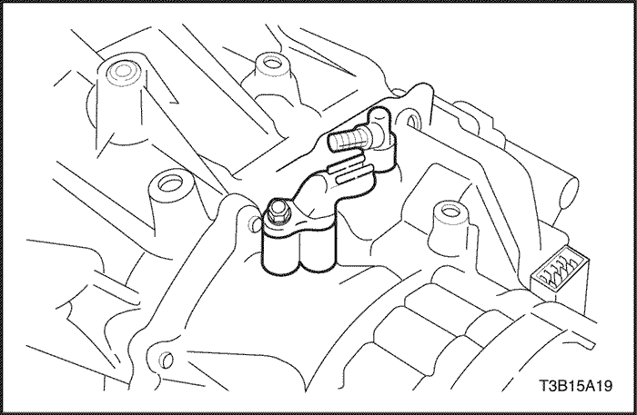
- Desmonte el tornillo y el sensor de velocidad del eje primario (ISS).
- Retire el tapón respirador.
- Retire la junta tórica del tapón respirador.
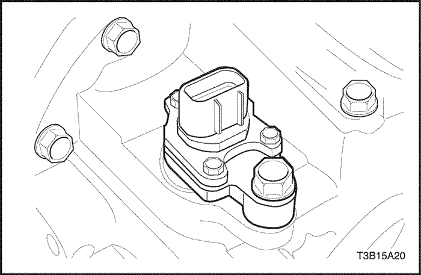
- Desmonte el tornillo y el sensor de velocidad del eje secundario (OSS).
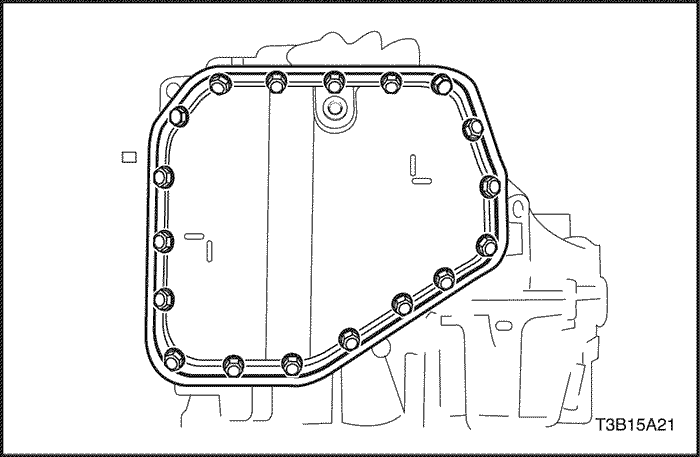
- Desmonte los 18 tornillos.
- Quite la junta y el cárter de aceite.
- Retire el tapón de drenaje del cárter de aceite.
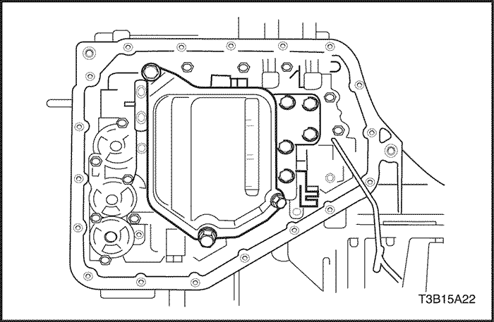
- Desmonte los tres tornillos y el filtro de aceite.
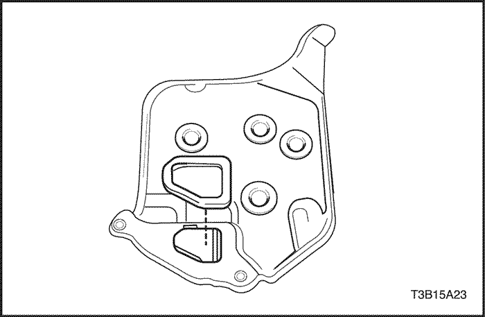
- Retire la junta del colador de aceite.
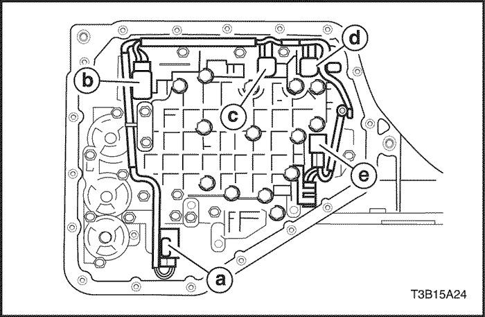
- Desmonte el tornillo y el sensor de temperatura del aceite de la transmisión, junto con su abrazadera.
- Desenchufe los 5 conectores del solenoide.
- a. Solenoide del mando de bloqueo.
- b. Solenoide de control de presión.
- c. Solenoide de cambios nº 2.
- d. Solenoide de cambios nº 1.
- e. Solenoide de sincronización.
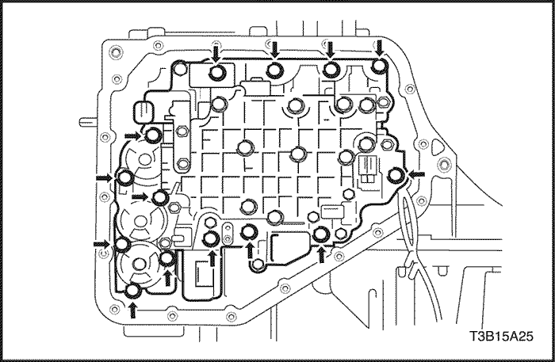
- Apoye el conjunto del cuerpo de válvulas y desmonte los 14 tornillos.
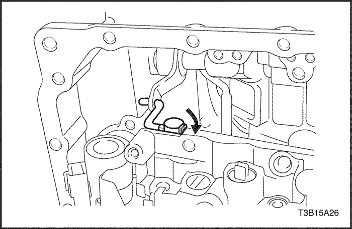
- Desconecte la varilla de control de válvula manual de la palanca de válvula manual y luego retire el conjunto del cuerpo de válvulas.
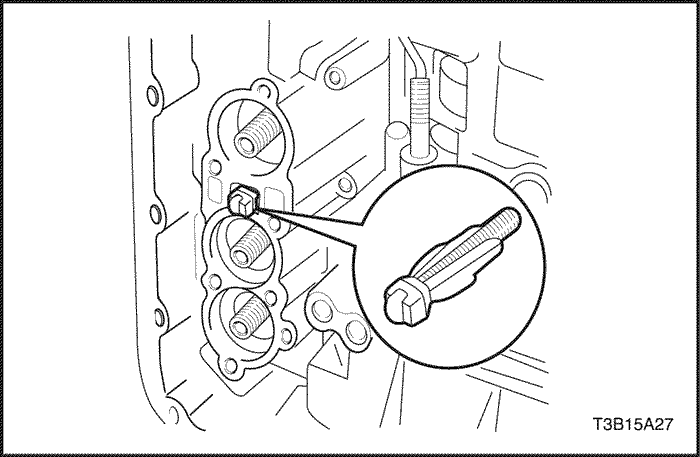
- Desmonte la válvula antirretorno y el muelle.
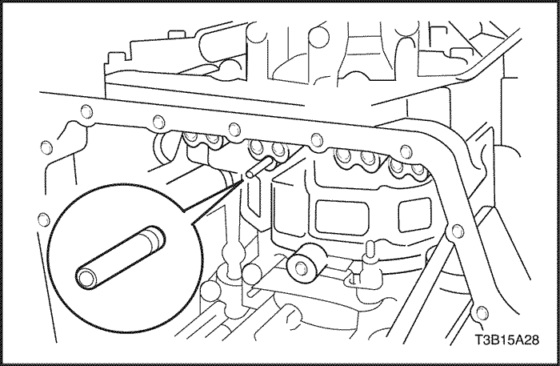
- Retire la junta del tambor de freno.
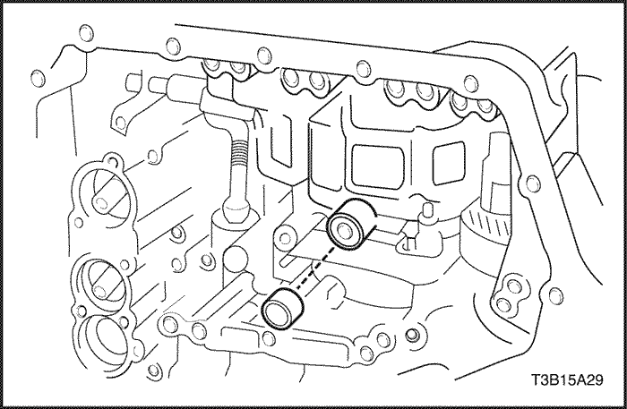
- Retire la junta de aplicación.
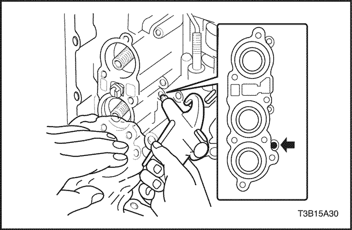
TENGA PRECAUCIÓN AL RETIRAR COMPONENTES CON AIRE COMPRIMIDO YA QUE PUEDE OCASIONAR LESIONES PERSONALES.
Aviso: Al soplar el aire tenga cuidado, ya que podría saltar el pistón. Al retirar el pistón, sosténgalo con la mano usando un trapo.
Aviso: Tenga cuidado de no salpicar el aceite de transmisión automática (ATF) al utilizar aire a presión.
- Aplique aire comprimido a 392 kPa (57 psi) en el orificio de aceite y desmonte el pistón y el muelle del acumulador del embrague directo (C2).
- Desmonte el muelle.
- Retire las 2 juntas tóricas del pistón del acumulador del embrague directo (C2).
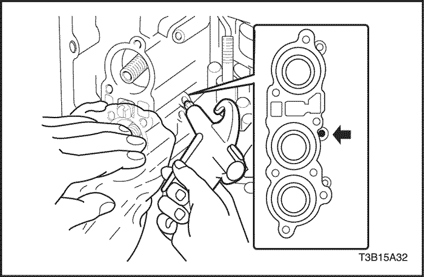
TENGA PRECAUCIÓN AL RETIRAR COMPONENTES CON AIRE COMPRIMIDO YA QUE PUEDE OCASIONAR LESIONES PERSONALES.
Aviso: Al soplar el aire puede saltar el pistón. Al retirar el pistón, sosténgalo con la mano usando un trapo.
Aviso: Tenga cuidado de no salpicar ATF al soplar aire.
- Aplique aire comprimido a 392 kPa (57 psi) en el orificio de aceite y desmonte el pistón y el muelle del acumulador del embrague de avance (C1).
- Desmonte el muelle.
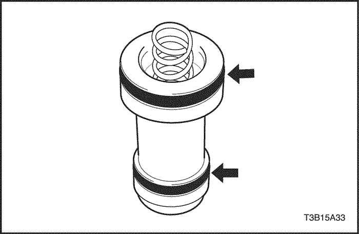
- Retire las 2 juntas tóricas de pistón del acumulador del embrague directo (C1).
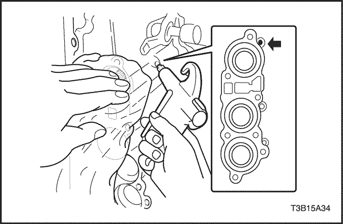
TENGA PRECAUCIÓN AL RETIRAR COMPONENTES CON AIRE COMPRIMIDO YA QUE PUEDE OCASIONAR LESIONES PERSONALES.
Aviso: Al soplar el aire puede saltar el pistón. Al retirar el pistón, sosténgalo con la mano usando un trapo.
Aviso: Tenga cuidado de no salpicar ATF al soplar aire.
- Aplique aire comprimido a 392 kPa (57 psi) en el orificio de aceite y desmonte el pistón y el muelle del acumulador del embrague del freno de sobremarcha y del segundo freno (B1).
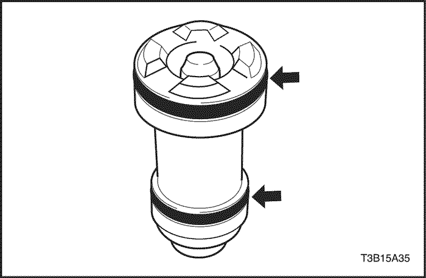
- Desmonte las 2 juntas tóricas del pistón del acumulador del freno de sobremarcha y del segundo freno (B1).
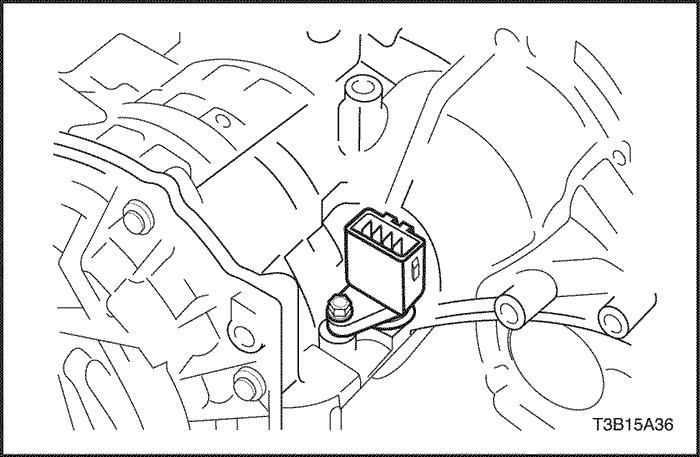
- Desmonte el tornillo y el cable de la caja de cambios, de la carcasa de la caja de cambios.
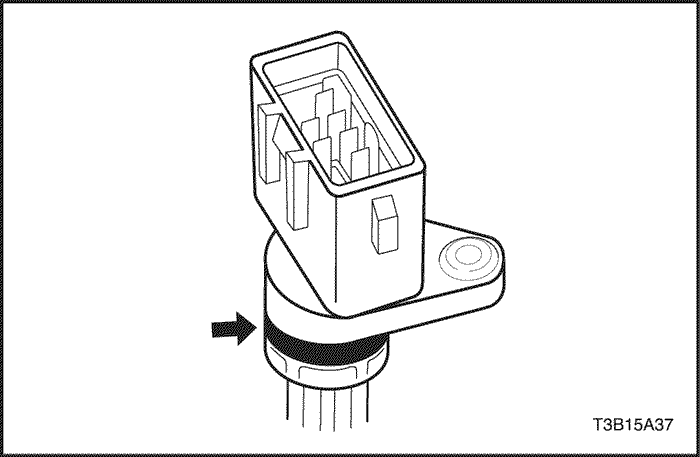
- Desmonte la junta tórica, del cable de la caja de cambios.
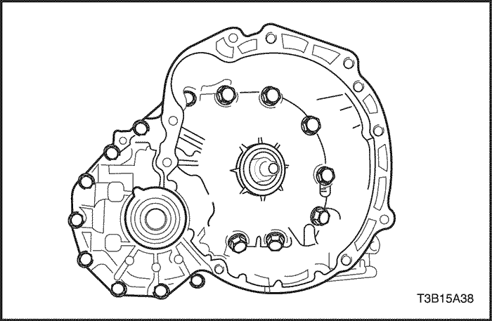
- Desmonte los 16 tornillos y golpee suavemente alrededor de toda la carcasa de la caja de cambios, con un martillo de plástico, para desmontar la carcasa de la caja de cambios, de su alojamiento.
Importante: Tenga cuidado para no dejar caer el conjunto de engranajes del diferencial al desmontar la carcasa de la caja de cambios.
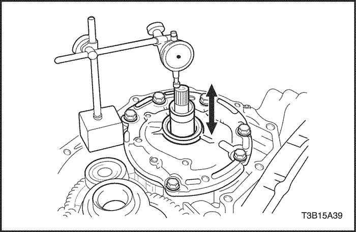
- Mida el juego axial del eje primario con un indicador de carátula.
- Juego axial: 0,3 - 0,9 mm (0,012 - 0,035 pulg.).
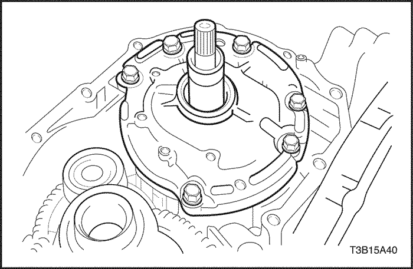
- Desmonte los 6 tornillos y la bomba de aceite.
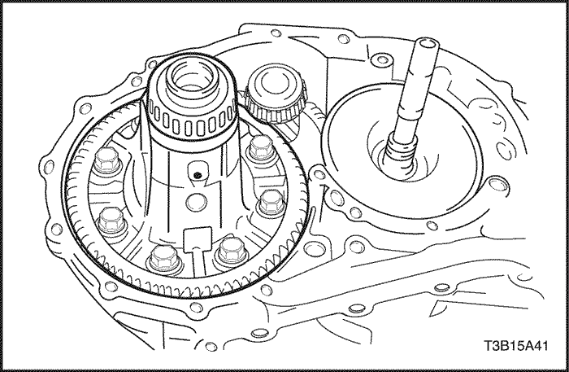
- Desmonte el conjunto del diferencial, de la carcasa de la caja de cambios.
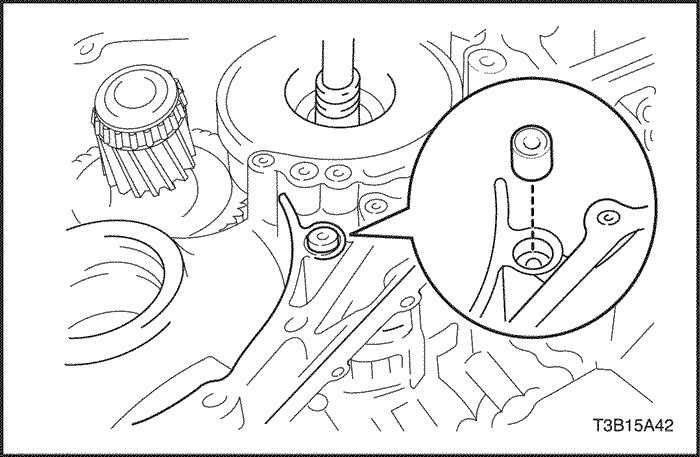
- Retire la junta de aplicación.
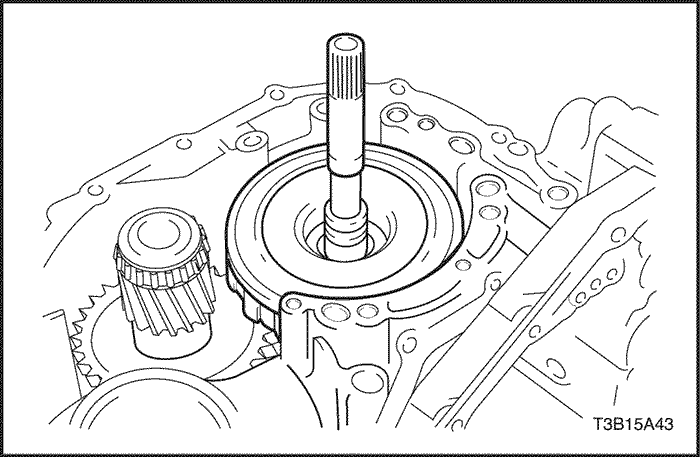
- Desmonte el conjunto del embrague directo (C2), de la carcasa de la caja de cambios.
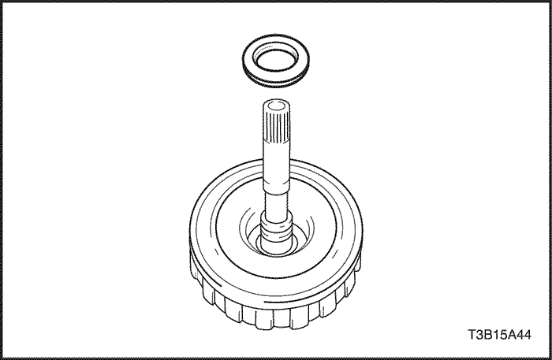
- Retire el cojinete de rodillo de aguja de presión del conjunto del embrague directo.
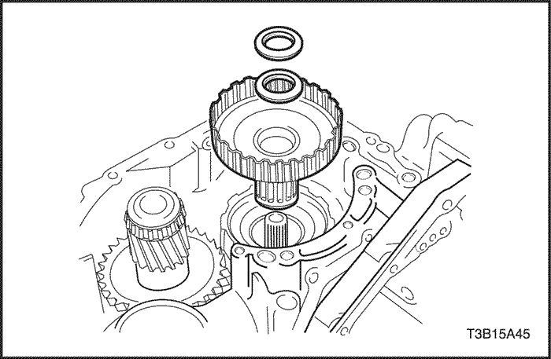
- Desmonte el cubo del embrague directo (C2), el cojinete de agujas de empuje y la pista del cojinete de empuje, de la carcasa de la caja de cambios.
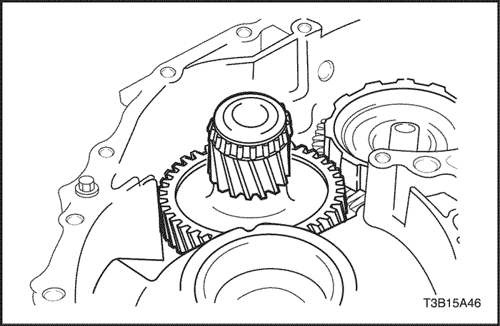
- Desmonte el conjunto del engranaje conducido del contraeje, de la carcasa de la caja de cambios.
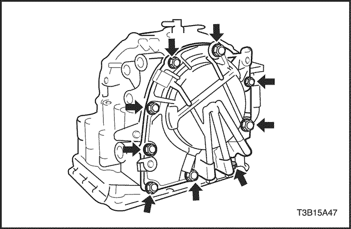
- Desmonte los 9 tornillos y golpee suavemente alrededor de toda la tapa trasera de la caja de cambios, con un martillo de plástico, para desmontarla de la carcasa de la caja de cambios.
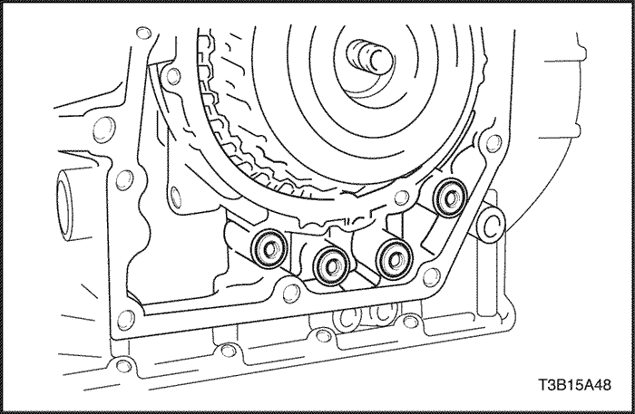
- Retire las 4 juntas de aplicación.
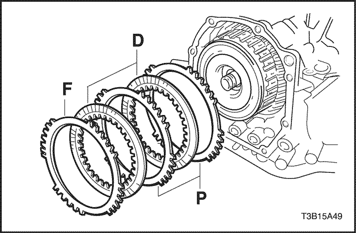
- Desmonte la brida del segundo freno y del freno de sobremarcha (B1), los 2 discos y las 2 placas, de la carcasa de la caja de cambios.
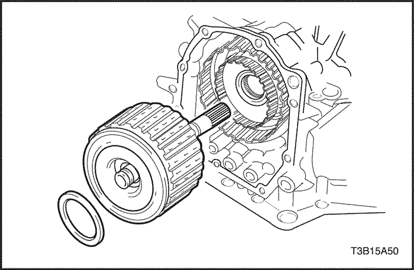
- Retire el cojinete de rodillo de aguja de presión y el ensamble del embrague directo e inverso.
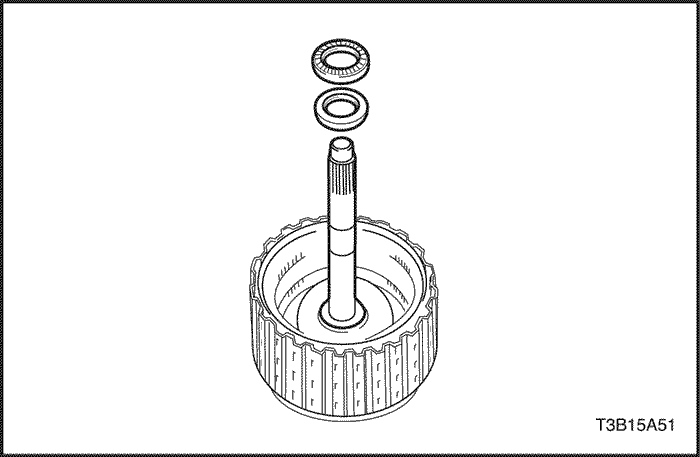
- Retire el cojinete de rodillo de aguja de presión y el aro de rodamiento de cojinete de empuje del conjunto del embrague directo e inverso.
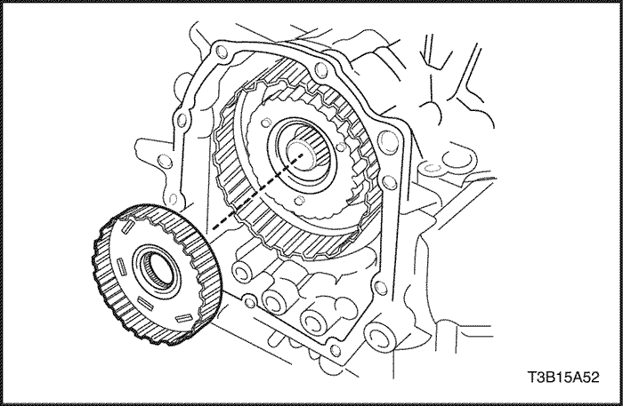
- Desmonte el cubo del embrague de avance, de la carcasa de la caja de cambios.
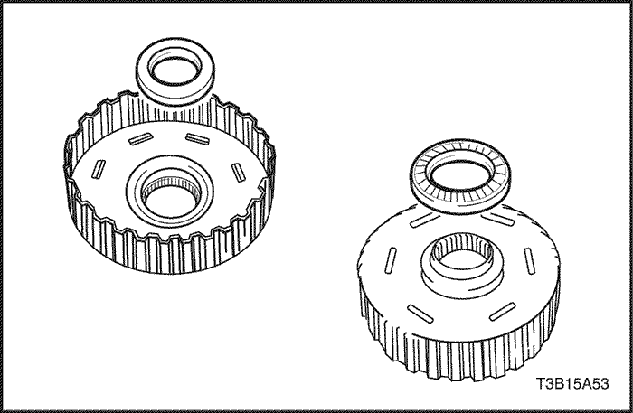
- Retire el aro de rodamiento de cojinete de empuje y el cojinete de rodillo de aguja de presión del cubo del embrague directo.
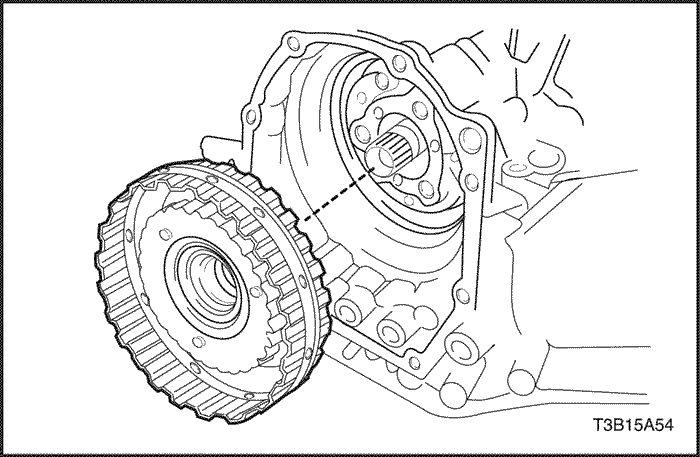
- Desmonte el engranaje central del engranaje planetario trasero y el conjunto del embrague unidireccional.
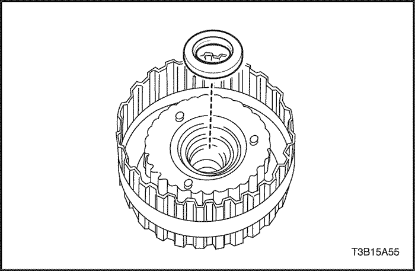
- Desmonte la pista del cojinete de empuje, del engranaje central del engranaje planetario trasero y el conjunto del embrague unidireccional.
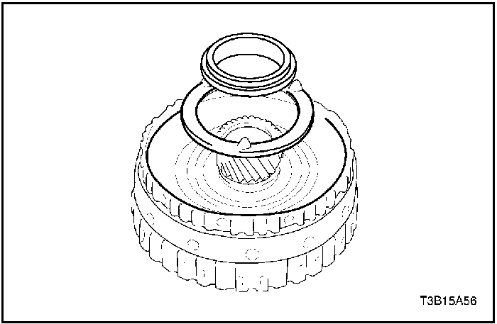
- Desmonte el cojinete de agujas de presión y la arandela de empuje del engranaje central del tren de engranajes planetarios trasero y el conjunto del embrague unidireccional.
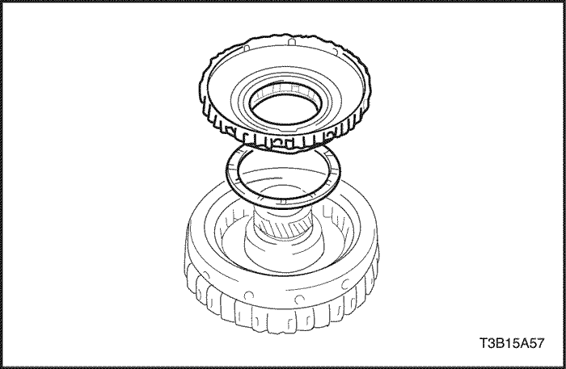
- Desmonte el conjunto del embrague unidireccional y la arandela de empuje, del engranaje central del tren de engranajes planetarios trasero.
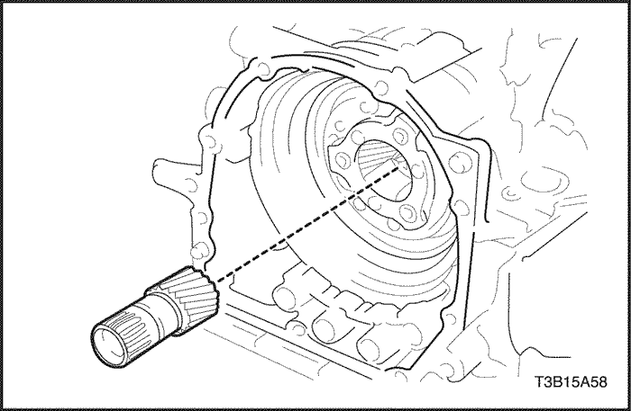
- Desmonte el engranaje central del tren de engranajes planetarios delantero, de la carcasa de la caja de cambios.
- Desmonte la pista del cojinete de empuje, del engranaje central del engranaje planetario delantero.
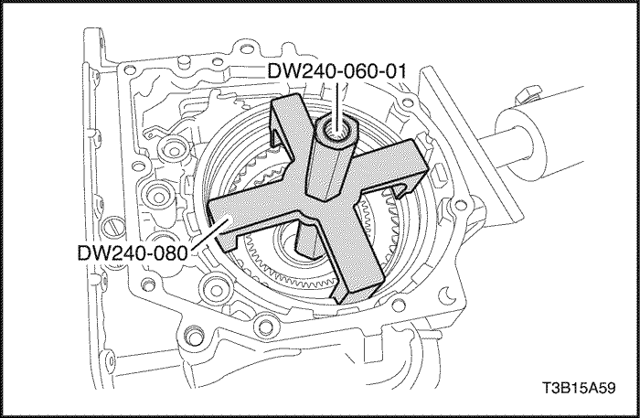
TENGA CUIDADO AL DESMONTAR LOS ANILLOS ELÁSTICOS DE RETENCIÓN YA QUE LOS MISMOS PODRÍAN CAUSAR LESIONES PERSONALES.
Aviso: Detenga la presión cuando el segundo freno haya bajado 1 - 2 mm (0,039 - 0,078 pulg.) de la ranura del anillo elástico de retención, para evitar que se deforme el segundo freno.
- Utilizando el tornillo / tuerca compresor de muelles de frenos DW240-060-01 y el adaptador del segundo freno DW240-080, desmonte los 2 anillos elásticos de retención, el pistón del segundo freno y el muelle de retorno del pistón del segundo freno.
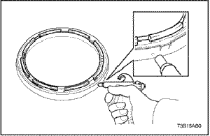
TENGA PRECAUCIÓN AL RETIRAR COMPONENTES CON AIRE COMPRIMIDO YA QUE PUEDE OCASIONAR LESIONES PERSONALES.
Aviso: Al soplar el aire puede saltar el pistón. Al retirar el pistón, sosténgalo con la mano usando un trapo.
Aviso: Tenga cuidado de no salpicar ATF al soplar aire.
- Aplique aire comprimido a 392 kPa (57 psi) en el segundo freno para desmontar el pistón del segundo freno, del cilindro del embrague del segundo freno.
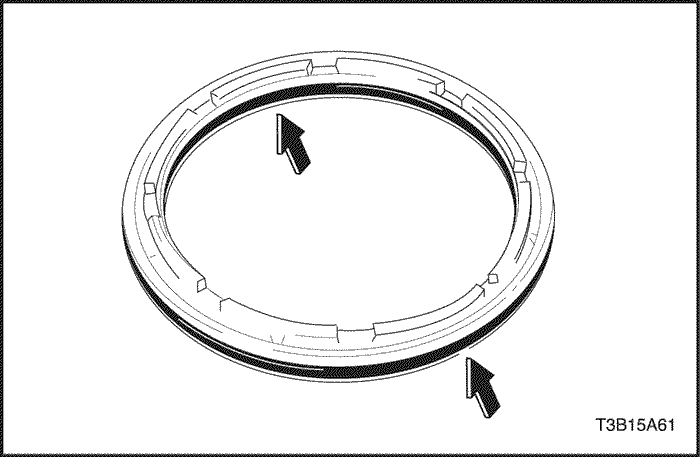
- Desmonte las 2 juntas tóricas del pistón del segundo freno.
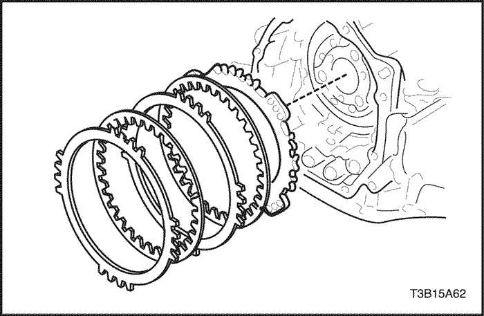
- Retire las 2 placas, 2 discos y brida.
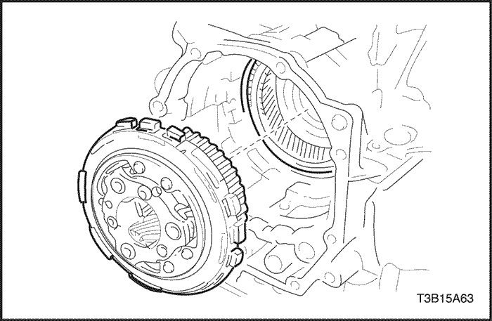
- Desmonte el embrague unidireccional nº 2 y el tren de engranajes planetarios, de la carcasa de la caja de cambios.
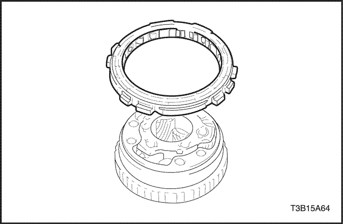
- Desmonte el embrague unidireccional nº 2 del tren de engranajes planetarios y desmonte el clip antitraqueteo.
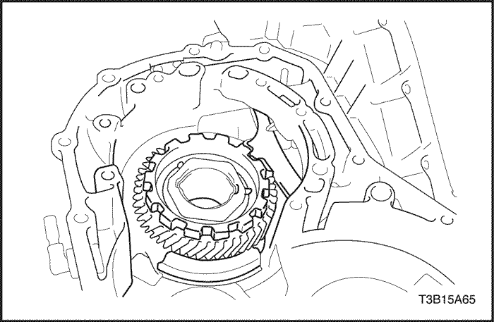
- Fije el engranaje de transmisión intermedia con el trinquete del bloqueo de estacionamiento.
- Desmonte la tuerca de la corona del engranaje planetario utilizando el vaso de extracción / montaje de la tuerca de la corona del engranaje planetario DW 260-041.
Aviso: Desmonte la tuerca, sin desmontar la corona del engranaje planetario. Si utiliza un cincel u otra herramienta similar para desmontar la corona del engranaje planetario, el impacto podría dañar el cojinete.
- Desmonte los dos tornillos y el soporte del trinquete del bloqueo de estacionamiento.
- Desmonte el eje del trinquete del bloqueo de estacionamiento, el muelle de torsión y el trinquete.
- Desmonte el tornillo y el muelle de retención manual.
- Suelte y retire el espaciador usando un cincel y martillo.
- Extraiga el pasador, utilizando un botador y un martillo.
- Retire el árbol de la palanca de válvula manual y la palanca.
- Retire la varilla del seguro de estacionamiento de la palanca de válvula manual.
- Desmonte el retén de aceite, con un destornillador.
- Desmonte la corona del engranaje planetario utilizando el tornillo / tuerca compresor de muelles de frenos DW240-060-01, el adaptador del primer freno y del freno de marcha atrás DW240-070, y el extractor de corona del engranaje planetario DW240-090.
- Monte los 3 tornillos y el engranaje de la transmisión intermedia.
- Tornillo (M6): L = 40 -80 mm, Paso = 1,0 mm
- Gire los 3 tornillos en orden y desmonte el engranaje de transmisión intermedia y la corona del engranaje planetario.
TENGA CUIDADO AL DESMONTAR LOS ANILLOS ELÁSTICOS DE RETENCIÓN YA QUE LOS MISMOS PODRÍAN CAUSAR LESIONES PERSONALES.
- Desmonte el anillo elástico de retención del freno de la primera marcha y de la marcha atrás, utilizando el tornillo / tuerca compresor de muelle de freno DW240-060-01 y el adaptador del primer freno y del freno de marcha atrás DW240-070.
- Desmonte la brida, los 4 discos, las 4 placas y el muelle de retorno.
TENGA PRECAUCIÓN AL RETIRAR COMPONENTES CON AIRE COMPRIMIDO YA QUE PUEDE OCASIONAR LESIONES PERSONALES.
Aviso: Al soplar el aire tenga cuidado, ya que podría saltar el pistón. Al retirar el pistón, sosténgalo con la mano usando un trapo.
Aviso: Tenga cuidado de no salpicar ATF al soplar aire.
- Aplique aire comprimido a 392 kPa (57 psi) en la carcasa de la caja de cambios para desmontar el pistón del primer freno y del freno de marcha.
- Retire las dos juntas tóricas del pistón de 1a y marcha atrás.
- Desmonte el tornillo y la placa nº 1 de la carcasa de la caja de cambios, de esta última.
- Desmonte la pista exterior del cojinete de rodillos cónicos del engranaje conducido del contraeje y la arandela de ajuste, de la carcasa de la caja de cambios, utilizando un extractor apropiado.
- Desmonte el retén de aceite de la carcasa de la caja de cambios, con un destornillador.
Aviso: Tenga cuidado de no dañar la carcasa de la caja de cambios al desmontar el retén de aceite con un destornillador.
- Desmonte la pista exterior del cojinete lateral de la carcasa de la caja de cambios y la arandela de ajuste, utilizando el adaptador de la pista exterior de cojinete lateral de la carcasa de la caja de cambios DW240-150 y el mango adaptador DW240-170.
- Desmonte los 3 tornillos y la placa de bloqueo del depósito de aceite, de la carcasa de la caja de cambios.
- Desmonte el tornillo y la abrazadera del tubo nº 1, de la carcasa de la caja de cambios.
- Desmonte el tubo de alimentación de lubricante a la caja de cambios y el tubo de alimentación de lubricante al diferencial, de la carcasa de la caja de cambios.
- Desmonte la pista exterior del cojinete de rodillos cónicos del engranaje conducido del contraeje, de la carcasa de la caja de cambios, utilizando un extractor apropiado.
- Desmonte el retén de aceite de la carcasa de la caja de cambios, con un destornillador.
Aviso: Tenga cuidado de no dañar la carcasa de la caja de cambios al desmontar el retén de aceite con un destornillador.
- Desmonte la pista exterior del cojinete lateral, de la carcasa de la caja de cambios, utilizando un extractor apropiado.
TENGA CUIDADO AL DESMONTAR LOS ANILLOS ELÁSTICOS DE RETENCIÓN YA QUE LOS MISMOS PODRÍAN CAUSAR LESIONES PERSONALES.
Aviso: Detenga la presión cuando el pistón del freno de sobremarcha haya bajado 1 - 2 mm (0,039-0,078 pulg.) desde la ranura del anillo elástico de retención, evitando así que se deforme el anillo.
- Desmonte el anillo elástico de retención utilizando el compresor de muelle de freno/embrague DW240-020, el adaptador de freno de sobremarcha DW240-050 y un destornillador.
- Desmonte el muelle de retorno del freno de sobremarcha.
TENGA PRECAUCIÓN AL RETIRAR COMPONENTES CON AIRE COMPRIMIDO YA QUE PUEDE OCASIONAR LESIONES PERSONALES.
Aviso: Al soplar el aire puede saltar el pistón. Al retirar el pistón, sosténgalo con la mano usando un trapo.
Aviso: Tenga cuidado de no salpicar ATF al soplar aire.
- Aplique aire comprimido a 392 kPa (57 psi) en la tapa trasera de la caja de cambios para desmontar el pistón del freno de sobremarcha.
- Retire las 2 juntas tóricas del pistón de freno de sobremarcha.
- Desmonte los 2 anillos de estanqueidad, de la tapa trasera de la caja de cambios.
Aviso: No expandir excesivamente el anillo de junta hermética.
- Desmonte los 4 tapones roscados y las 4 juntas tóricas, de la tapa trasera de la caja de cambios.
DW240-020 Compresor de muelle de embrague/freno
DW240-050 Adaptador de freno de sobremarcha
DW240-060-01 Tornillo / tuerca compresor de muelle de freno
DW240-060-02 Placa de compresor de muelle de freno
DW240-070 Adaptador de freno de 1ra/Marcha atrás
DW240-100 Adaptador para instalación de engranajes de transmisión intermedia
DW240-130 Adaptador de precarga del diferencial
DW260-031-01 Instalador de retén de aceite de la carcasa de la caja de cambios
DW260-031-02 Instalador de retén de aceite de la carcasa de la caja de cambios
DW260-041 Vaso de extracción / montaje de la tuerca de la corona del engranaje planetario
DW240-160 Adaptador de la pista exterior del cojinete de rodillos cónicos de la carcasa de la caja de cambios.
DW240-140 - Adaptador de la pista exterior del cojinete lateral de la carcasa de la caja de cambios
DW240-170 Mango del adaptador
- Instale las 4 juntas tóricas en los 4 tapones roscados.
- Monte los 4 tapones roscados con sus juntas tóricas, en la tapa trasera de la caja de cambios.
Apretar
Apriete los tapones roscados a 7,4 N•m (65 lbs-pulg.).
- Monte 2 anillos de estanqueidad en la tapa trasera de la caja de cambios.
- Mida la longitud sin cargar del muelle de retorno del pistón del freno de sobremarcha junto con el asiento del muelle, utilizando un pie de rey.
- Distancia libre estándar: 18,99 mm (0,7476 pulg.)
- Lubrique las 2 juntas tóricas nuevas con aceite de transmisión automática (ATF) y móntelas en el pistón de freno de sobremarcha.
- Lubrique el pistón del freno de sobremarcha con aceite de transmisión automática (ATF) y móntelo en la tapa trasera de la caja de cambios.
Aviso: Tenga cuidado de no dañar las juntas tóricas del pistón de freno de sobremarcha.
- Monte el muelle de retorno del pistón del freno de sobremarcha y el anillo elástico de retención en la tapa trasera de la caja de cambios, con ayuda del compresor de muelle de freno/embrague DW240-020, el adaptador de freno de sobremarcha DW240-050 y un destornillador.
Aviso: Detenga la presión cuando el pistón del freno de sobremarcha haya bajado 1 - 2 mm (0,039 - 0,078 pulg.) desde la ranura del anillo elástico de retención, evitando así que se deforme el anillo.
- Monte una pista exterior de cojinete lateral nueva en la carcasa de la caja de cambios, utilizando el adaptador de pista exterior de cojinete lateral de la carcasa de la caja de cambios DW240-140 y el mango adaptador DW240-170.
- Monte un retén de aceite nuevo en la carcasa de la caja de cambios, utilizando el instalador de retén de aceite de la carcasa de la caja de cambios DW260-031-01 y un martillo.
- Profundidad del retén de aceite: 3,1 mm (0,122 pulg.)
- Monte una pista exterior nueva para el cojinete de rodillos cónicos, en la carcasa de la caja de cambios.
Aviso: Meta a presión la pista exterior del cojinete de rodillos cónicos hasta que haga contacto con la carcasa de la caja de cambios.
- Monte el tubo de alimentación de lubricante a la caja de cambios y el tubo de alimentación de lubricante al diferencial, en la carcasa de la caja de cambios.
- Monte la abrazadera de sujeción del tubo nº 1 en la carcasa de la caja de cambios, con el tornillo.
Apretar
Apriete el tornillo a 5,4 N•m (48 lbs-pulg.).
- Monte la placa de seguridad del depósito de aceite en la carcasa de la caja de cambios, con los 3 tornillos.
Apretar
Apriete los tornillos a 5,4 N•m (48 lbs-pulg.).
- Monte la arandela de ajuste en la carcasa de la caja de cambios.
Aviso: Primero instale un asiento del mismo espesor que el anterior.
- Monte una pista exterior de cojinete nueva, en la carcasa de la caja de cambios.
- Monte un retén de aceite nuevo en la carcasa de la caja de cambios, utilizando el instalador de retén de aceite de la carcasa de la caja de cambios DW260-031-02 y un martillo.
- Profundidad del retén de aceite: 4,3 mm (0,169 pulg.)
- Monte la arandela de ajuste en la carcasa de la caja de cambios.
Aviso: Primero instale un asiento del mismo espesor que el anterior.
- Monte una pista exterior nueva para el cojinete de rodillos cónicos en la carcasa de la caja de cambios, utilizando el adaptador de pista exterior del cojinete de rodillos cónicos DW240-160 y el mango adaptador DW240-170.
Aviso: Meta a presión la arandela de ajuste hasta que haga contacto con la carcasa de la caja de cambios.
- Monte la placa nº 1 de la carcasa de la caja de cambios, con su tornillo.
Apretar
Apriete el tornillo a 9,8 N•m (87 lbs-pulg.).
- Monte el diferencial en la carcasa de la caja de cambios.
- Monte la carcasa de la caja de cambios y apriete provisionalmente sus 16 tornillos.
- Apriete completamente 8 ó 9 de los 16 tornillos de la carcasa de la caja de cambios.
Apretar
Apriete los tornillos a 29 N•m (22 lbs-pie).
- Con auxilio del adaptador de precarga del diferencial DW240-130, haga girar hacia la izquierda y derecha el engranaje diferencial 2 o 3 veces para permitir que se asiente el cojinete.
- Mida la precarga del diferencial, utilizando el adaptador de precarga del diferencial DW240-130 y una llave dinamométrica pequeña.
Aviso: Anote el valor medido.
- Desmonte la carcasa de la caja de cambios e instale el engranaje conducido del contraeje.
- Monte la carcasa de la caja de cambios y apriete provisionalmente los 16 tornillos de la misma.
- Apriete los tornillos de la carcasa de la caja de cambios de la misma manera que en el paso 22.
Apretar
Apriete los tornillos a 29 N•m (22 lbs-pulg.).
- Con auxilio del adaptador de precarga del diferencial DW240-130, haga girar hacia la izquierda y derecha el engranaje diferencial 2 o 3 veces para permitir que se asiente el cojinete.
- Mida la precarga del diferencial, utilizando el adaptador de precarga del diferencial DW240-130 y una llave dinamométrica pequeña. A este valor, réstele el obtenido en el paso 23; el resultado será la precarga del engranaje conducido del contraeje.
- Cojinete nuevo: 0,33 - 0,76 N•m (3,21 - 6,77 lbs-pulg.)
- Cojinete usado: 0,17- 0,38 N•m (1,48 - 3,39 lbs-pulg.)
Si la precarga del engranaje conducido del contraeje no se ajusta a esta especificación, seleccione una arandela de ajuste, en la tabla que aparece a continuación, y vuelva a realizar la medición. Repita el procedimiento anterior hasta que el valor esté dentro de la especificación.
Aviso: Cuando la precarga sea mayor que la especificación, seleccione un asiento con espesor menor. Si la precarga es menor a la especificación, seleccione un asiento de mayor espesor.
- Espesor de la arandela de ajuste: mm (pulg.)
Marca | Grosor | Marca | Grosor |
1 | 1.70 (0.0669) | G | 2.17 (0.0854) |
2 | 1.75 (0.0689) | H | 2.20 (0.0866) |
3 | 1.80 (0.0709) | K | 2.25 (0.0886) |
4 | 1.85 (0.0728) | L | 2.30 (0.0906) |
5 | 1.90 (0.0748) | M | 2.35 (0.0925) |
6 | 1.93 (0.0760) | N | 2.40 (0.0945) |
7 | 1.96 (0.0772) | P | 2.45 (0.0965) |
A | 1.99 (0.0783) | Q | 2.50 (0.0984) |
B | 2.02 (0.0795) | R | 2.55 (0.1004) |
C | 2.05 (0.0807) | S | 2.60 (0.1024) |
D | 2.08 (0.0819) | U | 2.65 (0.1043) |
E | 2.11 (0.0831) | W | 2.70(0.1063) |
F | 2.14 (0.0843) | - | - |
- Mida la longitud sin carga del muelle de retorno del pistón del primer freno y freno de marcha atrás junto con el asiento del muelle, utilizando un pie de rey.
- Longitud sin carga, estándar: 18,053 mm (0,71075 pulg.)
- Verifique si la superficie deslizante del disco, la placa o la brida del freno de 1ra y marcha atrás están desgastados o quemados. De ser necesario, sustitúyalos.
Aviso: Si el forro del disco se está desprendiendo o está descolorido, o aún si una parte de la ranura se ha desgastado, sustituya todos los discos.
Aviso: Antes de montar los nuevos discos, remójelos en ATF por lo menos durante 15 minutos.
- Cubra dos nuevas juntas tóricas con ATF e instálelas en el pistón de 1ra y marcha atrás.
- Monte el pistón del primier freno y del freno de marcha atrás, en la carcasa de la caja de cambios.
Aviso: Tenga cuidado de no dañar las juntas tóricas del pistón de freno de 1ra y marcha atrás.
- Monte el muelle de retorno en la carcasa de la caja de cambios.
- Instale las 4 placas, 4 discos y la brida.
- Instálelos en el siguiente orden: P - D - P - D - P - D - P - D - F
- (P= Placa, D= Disco, F= Brida)
- Monte el anillo elástico de retención utilizando el adaptador de freno de 1ra y marcha atrás DW240-070 y el tornillo / tuerca compresor de muelle de freno DW240-060-01.
Aviso: Asegúrese de que el anillo elástico de retención quede correctamente instalado en la ranura de la carcasa de la caja de cambios.
- Con un indicador de carátula, mida la carrera del pistón de freno de 1ra y marcha atrás mientras aplica y libera aire comprimido a 392-785 kPa (57-114 psi).
Aviso: Si la carrera del pistón no es estándar, inspeccione los discos, placas y brida. Carrera del pistón 0,6 - 1,3 mm (0,024 - 0,051 pulg.)
- Monte el engranaje de transmisión intermedia utilizando el adaptador para instalación de transmisión intermedia DW240-100, el tornillo / tuerca de compresor de muelle de freno DW240-060-01 y la placa de compresor de muelle de freno DW240-060-02.
- Monte el engranaje de transmisión intermedia utilizando el adaptador para instalación de transmisión intermedia DW240-100, el tornillo / tuerca de compresor de muelle de freno DW240-060-01 y la placa de compresor de muelle de freno DW240-060-02.
Aviso: Tenga cuidado de no aplicar una fuerza excesiva a la carcasa de la caja de cambios.
- Lubrique los retenes de aceite nuevos con aceite de transmisión automática (ATF).
- Lubrique los retenes de aceite nuevos con aceite de transmisión automática (ATF).
- Monte el retén de aceite en la carcasa de la caja de cambios.
- Monte el retén de aceite en la carcasa de la caja de cambios.
- Profundidad del retén de aceite:
- A: 1 ± 0,25 mm (0,39 ± 0,0098 pulg.)
- Instale la varilla del seguro de estacionamiento a la palanca de válvula manual.
- Instale la varilla del seguro de estacionamiento a la palanca de válvula manual.
- Coloque un nuevos espaciador a la palanca de válvula manual.
- Coloque un nuevos espaciador a la palanca de válvula manual.
- Instale el árbol de la palanca de válvula manual y la palanca.
- Instale el árbol de la palanca de válvula manual y la palanca.
- Monte un pasador nuevo, utilizando un botador y un martillo.
- Gire el espaciador y el árbol de la palanca para alinear el pequeño orificio que indica la posición correcta del espaciador con la marca en el árbol de la palanca.
- Gire el espaciador y el árbol de la palanca para alinear el pequeño orificio que indica la posición correcta del espaciador con la marca en el árbol de la palanca.
- Inserte el espaciador a través del orificio pequeño, con un botador.
- Inserte el espaciador a través del orificio pequeño, con un botador.
- Verifique que el espaciador no gire.
- Monte el muelle de retención manual, con su tornillo.
Apretar
Apriete los tornillos a 9,8 N•m (87 lbs-pulg.).
- Monte el eje del trinquete de bloqueo de estacionamiento, el muelle de torsión y el trinquete.
Aviso: Compruebe que el extremo del muelle de torsión entre bien en la ranura.
- Monte el soporte del trinquete de bloqueo de estacionamiento con sus 2 tornillos.
Apretar
Apriete los tornillos a 7,4 N•m (65 lbs-pulg.).
- Monte la corona del planetario utilizando el adaptador para instalación de engranajes de transmisión intermedia DW240-100 y el tornillo / tuerca compresor de muelle de freno DW240-060-01.
- Antes de montar la corona del engranaje planetario, asegúrese de sustituir la brida de dicha corona por una nueva.
- Fije el engranaje de transmisión intermedia con el trinquete de seguro de estacionamiento
- Monte una tuerca nueva, utilizando el vaso de extracción / montaje de la tuerca de la corona del engranaje planetario DW260-041.
Apretar
Apriete la tuerca a 9,8 N•m (87 lb-pulg.).
- Haga girar el engranaje conductor del contraeje a 100 revoluciones por minuto y mida la precarga, con una llave dinamométrica pequeña.
Aviso: Cuando la precarga sea menor a la especificación, apriete más la tuerca para ajustar la precarga. Precarga: 0,05 - 0,35 N•m (0,43 - 3,12 lbs-pulg.)
Apretar
Apriete la tuerca a 29 N•m (22 lbs-pie) o menos.
- Enclave la tuerca.
- Monte el tren de engranajes planetarios en la carcasa de la caja de cambios.
- Lubrique la arandela de empuje del portasatélites con vaselina de petróleo y móntela en el tren de engranajes planetarios.
- Monte el embrague unidireccional nº 2 en la carcasa de la caja de cambios.
- Compruebe que el tren de engranajes planetarios gire libremente en sentido contrario a las agujas del reloj y se bloquee en el sentido de las agujas del reloj.
- Monte el clip antitraqueteo en el sitio que se señala en la figura (el espacio entre la pista exterior del embrague unidireccional nº 2 y la carcasa de la caja de cambios), y empuje el clip hasta que se escuche un "clic".
- Monte el clip antitraqueteo en el sitio que se señala en la figura (el espacio entre la pista exterior del embrague unidireccional nº 2 y la carcasa de la caja de cambios), y empuje el clip hasta que se escuche un "clic".
- Mida la longitud sin carga del muelle de retorno del pistón del segundo freno junto con el asiento del muelle, utilizando un pie de rey.
- Longitud sin carga, estándar: 15,85 mm (0,6240 pulg.)
- Compruebe si la superficie deslizante del disco, la placa o la brida del segundo freno está desgastada o quemada. De ser necesario, sustitúyalos.
Aviso: Si el forro del disco se está desprendiendo o está descolorido, o aún si una parte de la ranura se ha desgastado, sustituya todos los discos.
Aviso: Antes de montar los nuevos discos, remójelos en ATF por lo menos durante 15 minutos.
- Instale la brida, los 2 discos y 2 placas.
- Instálelos en el siguiente orden: F - D - P - D - P
- (D = Disco, P = Placa, F = Brida)
- Monte el muelle de retorno del segundo freno.
- Monte el muelle de retorno del segundo freno.
Aviso: Asegúrese de que el anillo elástico de retención quede correctamente instalado en la ranura de la carcasa de la caja de cambios.
- Lubrique las 2 juntas tóricas nuevas con aceite de transmisión automática (ATF) y móntelas en el pistón del segundo freno.
- Monte el pistón del segundo freno en el cilindro del embrague del segundo freno.
Aviso: Tenga cuidado de no dañar las juntas tóricas.
- Monte el cilindro del embrague del segundo freno, en la carcasa de la caja de cambios.
- Comprima el muelle de retorno del pistón del segundo freno, utilizando el tornillo / tuerca compresor de muelle del freno DW240-060-01 y el adaptador del segundo freno DW240-080.
- Monte el anillo elástico de retención utilizando un destornillador.
- Monte el anillo elástico de retención utilizando un destornillador.
Aviso: Asegúrese de que el anillo elástico de retención quede correctamente instalado en la ranura de la carcasa de la caja de cambios.
- Lubrique la pista del cojinete de empuje con vaselina de petróleo y móntela en el engranaje central del engranaje planetario delantero.
- Diámetro interior: 19,3 mm (0,760 pulg.)
- Diámetro exterior: 29,0 mm (1,142 pulg.)
- Monte el engranaje central del tren de engranajes planetarios en la carcasa de la caja de cambios.
- Monte la arandela de empuje y el conjunto del embrague unidireccional en el engranaje central del tren de engranajes planetarios.
- Lubrique la pista del cojinete de empuje con vaselina de petróleo y móntela en el engranaje central del tren de engranajes planetarios y el conjunto del embrague unidireccional.
- Diámetro interior: 42,5 mm (1,673 pulg.)
- Diámetro exterior: 57,5 mm (2,264 pulg.)
Aviso: Compruebe la dirección del cojinete.
- Monte el engranaje central del tren de engranajes planetarios trasero y el conjunto del embrague unidireccional, en la carcasa de la caja de cambios.
- Lubrique la pista del cojinete de empuje con vaselina de petróleo y móntela en la carcasa de la caja de cambios.
- Lubrique la pista del cojinete de empuje con vaselina de petróleo y móntela en la carcasa de la caja de cambios.
- Diámetro interior: 34,95 mm (1,3760 pulg.)
- Diámetro exterior: 45,50 mm (1,7913 pulg.)
Aviso: Compruebe la dirección del aro de rodamiento.
- Lubrique el cojinete de agujas de empuje con vaselina de petróleo y móntelo en el cubo del embrague directo.
- Diámetro interior: 33,3 mm (1,311 pulg.)
- Diámetro exterior: 46,5 mm (1,831 pulg.)
Aviso: Compruebe la dirección del cojinete.
- Monte el cubo del embrague de avance en la carcasa de la caja de cambios.
- Cubra el aro de rodamiento de cojinete de empuje con jalea de petróleo y colóquelo en el cubo del embrague directo.
- Diámetro interior: 19,3 mm (1,760 pulg.)
- Diámetro exterior: 30,6 mm (1,205 pulg.)
- Instale el aro de rodamiento de cojinete de empuje y el cojinete de rodillo de aguja de presión al conjunto de embrague directo e inverso.
- Diámetro de la pista y del cojinete: mm (pulg.)
. | Diámetro interior | Diámetro exterior |
Aro de rodamiento: | 18.1 (0.713) | 28.2 (1.110) |
Cojinete | 18.1 (0.713) | 29.6 (1.165) |
- Monte el conjunto del embrague de avance y marcha atrás en la carcasa de la caja de cambios.
- Verifique si la superficie deslizante del disco, la placa o la brida del segundo freno y del freno de sobremarcha está desgastada o quemada. De ser necesario, sustitúyalos.
Aviso: Si el forro del disco se está desprendiendo o está descolorido, o aún si una parte de la marca impresa se ha borrado, sustituya todos los discos.
Aviso: Antes del montaje de los nuevos discos, remójelos en ATF por lo menos durante 15 minutos.
- Monte el anillo elástico de retención en la carcasa de la caja de cambios, utilizando un destornillador.
Aviso: Asegúrese de que el anillo elástico de retención quede correctamente instalado en la ranura de la carcasa de la caja de cambios.
- Monte la brida, los 2 discos y las 2 placas en la carcasa de la caja de cambios.
- Instálelos en el siguiente orden: P - D - P - D - F
- (P= Placa, D= Disco, F= Brida)
- Limpie las piezas, la carcasa de la caja de cambios y la tapa trasera de la misma..
- Coloque una regla sobre la carcasa de la caja de cambios, tal como se muestra en la figura, y mida la separación entre la brida del segundo freno y freno de sobremarcha y la regla, utilizando un pie de rey. (Dimensión A).
- Coloque una regla sobre el pistón de freno de sobremarcha, tal como se muestra en la figura, y mida la separación entre la tapa trasera de la caja de cambios y la regla, utilizando un pie de rey. (Dimensión B).
- Calcule el valor de la carrera del pistón mediante la siguiente fórmula. Seleccione una brida que cumpla con el valor de la carrera del pistón e instálela.
- Carrera del pistón = Dimensión A - Dimensión B
- Carrera del pistón : 0,65 - 1,05 mm (0,0256 - 0,0413 pulg.)
- Espesor de la brida: mm (pulg.)
Valor de la carrera del pistón | Grosor | Marca |
0,738 ~ 0,949 (0,02905 ~ 0,03736) | 3.0 (0.118) | 0 |
0,950 ~ 1,149 (0,03740 ~ 0,04524) | 3.2 (0.126) | 1 |
1,150 ~ 1,349 (0,04528 ~ 0,05311) | 3.4 (0.134) | 2 |
1,350 ~ 1,549 (0,05315 ~ 0,06098) | 3.6 (0.142) | 3 |
1,550 ~ 1,702 (0,06102 ~ 0,06701) | 3.8 (0.150) | 0 |
- Ponga 4 cordones de junta líquida en la tapa trasera de la caja de cambios.
- Cubra el cojinete de rodillo de aguja de presión con jalea de petróleo y colóquelo en el conjunto del embrague directo e inverso.
- Diámetro interior: 43,2 mm (1,701 pulg.)
- Diámetro exterior: 62,0 mm (2,441 pulg.)
- Retire todo el material de la junta líquida y tenga cuidado de que no caiga aceite sobre las superficies de contacto de la carcasa de la caja de cambios o el alojamiento de la misma.
- Aplique una junta líquida en la tapa trasera de la caja de cambios.
- Junta líquida: Three Bond 1281 ó equivalente
- Anchura de la junta de estanqueidad: 1,2 mm (0,047 pulg.)
- Monte la tapa trasera de la caja de cambios en la carcasa de la caja de cambios con los 9 tornillos.
Apretar
Apriete los tornillos a 25 N•m (18 lbs-pie).
- Monte el conjunto del engranaje conducido del contraeje en la carcasa de la caja de cambios.
- Monte el conjunto del diferencial en la carcasa de la caja de cambios.
- Monte el cubo del embrague directo en la carcasa de la caja de cambios.
- Monte la pista del cojinete de empuje y el cojinete de agujas de empuje, en la carcasa de la caja de cambios.
- Pista y cojinete: mm (pulg.)
. | Diámetro interior | Diámetro exterior |
Aro de rodamiento: | 20.5 (0.807) | 32.6 (1.283) |
Cojinete | 17.8 (0.701) | 30.2 (1.189) |
- Monte el conjunto del embrague directo en la carcasa de la caja de cambios.
- Monte el conjunto del embrague directo en la carcasa de la caja de cambios.
- Coloque una nueva junta de aplicación.
- Monte el cojinete de agujas de empuje, en la carcasa de la caja de cambios.
Aviso: Compruebe la dirección del cojinete.
- Monte la bomba de aceite a través del eje primario y alinee los orificios para los tornillos de la bomba de aceite con la carcasa de la caja de cambios.
- Monte los 6 tornillos de la bomba de aceite.
Apretar
Apriete los tornillos a 25 N•m (18 lbs-pie).
- Mida el juego axial, en sentido axial.
Aviso: Si el juego axial no es el especificado, sustituya el cojinete de agujas de empuje.
- Juego axial 0,3 - 0,9 mm (0,012 - 0,035 pulg.).
- Cojinete: mm (pulg.)
Diámetro interior | Diámetro exterior | Espesor |
32.5 (1.280) | 48.5 (1.909) | 4.21 (0.1657) |
32.9 (1.295) | 48.5 (1.909) | 3.62 (0.1425) |
- Asegúrese de que el eje primario rota suavemente.
- Retire todo el material de la junta líquida y tenga cuidado de que no caiga aceite sobre las superficies de contacto de la carcasa de la caja de cambios o el alojamiento de la misma.
- Aplique una junta líquida en la carcasa de la caja de cambios.
- Compuesto FIPG: Three Bond 1281 ó equivalente.
- Anchura de la junta de estanqueidad: 1,2 mm (0,047 pulg.)
- Monte la carcasa de la caja de cambios en su alojamiento con los 16 tornillos.
Apretar
Apriete los tornillos a 29 N•m (22 lbs-pie).
- Aplique sellador o algún compuesto similar a los 3 tornillos señalados con las flechas.
- Lubrique la junta tórica nueva con aceite de transmisión automática (ATF) y móntela en el cable de la caja de cambios.
- Monte el cable de la caja de cambios en la carcasa de la misma, con su tornillo.
Apretar
Apriete los tornillos a 5,4 N•m (48 lbs-pulg.).
- Cubra 6 nuevas juntas tóricas con ATF e instálelas en los pistones.
- Lubrique los 3 muelles y los 3 pistones del acumulador con aceite de transmisión automática (ATF) y móntelos en los orificios.
Muelle | Longitud sin carga Diámetro exterior mm (pulg.) | Color |
B1 (freno de sobremarcha y segundo freno) | 47.13(1.8555)/16.0(0.630) | Rosado |
C1 (Embrague directo) | 57.90(2.2795)/17.2(0.677) | - |
C2 (Embrague directo) | 57.20(2.2520)/17.5(0.689) | Verde |
- Lubrique la junta nueva con aceite de transmisión automática (ATF) y móntela en la carcasa de la caja de cambios.
- Lubrique la junta nueva del tambor de freno con aceite de transmisión automática (ATF), y móntela en la carcasa de la caja de cambios.
- Monte el muelle y la válvula antirretorno.
- Conecte la varilla de control de la válvula manual a la palanca de válvula manual como se muestra en la ilustración.
- Monte el conjunto del cuerpo de válvulas en la carcasa de la caja de cambios.
Apretar
Apriete los tornillos a 11 N•m (97 lbs-pulg.).
Aviso: Cuando vaya a montar el cuerpo de válvulas en la carcasa de la caja de cambios, no permita que se incline ninguno de los pistones B1, C1 y C2 del acumulador. Cuando vaya a montar el cuerpo de válvulas en la carcasa de la caja de cambios, no toque los solenoides.
- Enchufe el conector del cable de la caja de cambios y el mazo de cables en el conjunto del cuerpo de válvulas.
- Enchufe los 5 conectores.
- a. Solenoide del mando de bloqueo.
- b. Solenoide de control de presión.
- c. Solenoide de cambios nº 2.
- d. Solenoide de cambios nº 1.
- e. Solenoide de sincronización.
- Instale el sensor TFT con la abrazadera.
Aviso: Asegúrese de que el cable de la caja de cambios no se salga de la superficie de montaje del cárter de aceite.
- Instale una nueva junta al colador de aceite.
- Monte el filtro de aceite en el cuerpo de válvulas, con sus 3 tornillos.
Apretar
Apriete los tornillos a 9,8 N•m (87 lbs-pulg.).
- Instale los 2 imanes en el cárter de aceite.
- Monte una junta nueva en el cárter de aceite y monte el cárter y la junta en la carcasa de la caja de cambios, con los 18 tornillos.
Apretar
Apriete los tornillos a 7 N•m (62 lbs-pulg.).
- Instale el sensor de velocidad del eje secundario (OSS).
Apretar
Apriete el tornillo a 7,4 N•m (65 lbs-pulg.).
- Monte el tapón del respiradero nº 1.
- Monte el sensor de velocidad del eje primario (ISS), con su tornillo.
Apretar
Apriete los tornillos a 5,4 N•m (48 lbs-pulg.).
- Cubra una nueva junta tórica con ATF e instálela al tapón roscado.
- Monte el tapón roscado en la carcasa de la caja de cambios.
Apretar
Apriete los tornillos a 7,4 N•m (65 lbs-pulg.).
- Lubrique las 2 juntas tóricas nuevas con aceite de transmisión automática (ATF) y móntelas en las conexiones de racor.
- Monte las 2 conexiones de racor en la carcasa de la caja de cambios.
Apretar
Apriete las uniones a 25 N•m (18 lbs-pie).
- Monte el interruptor TR en el eje de la palanca de la válvula manual y monte los 2 tornillos de ajuste, de manera provisional.
- Instale una nueva arandela de seguridad y tuercas.
Apretar
Apriete las tuercas a 12 N•m (106 lbs-pulg.).
- Instale provisionalmente la palanca de control.
- Gire la palanca en sentido contra el reloj hasta que se detenga y luego gírela en sentido del reloj dos marcas.
- Retire la palanca de control.
- Alinee la ranura con la línea de base neutral.
- Apriete los 2 tornillos.
Apretar
Apriete los tornillos a 5,4 N•m (48 lbs-pulg.).
- Enclave la tuerca y arandela de seguridad con un destornillador.
- Instale la palanca de control, la arandela y la tuerca.
Apretar
Apriete la tuerca a 12 N•m (106 lb-pulg.).
- Monte el convertidor de par en la caja de cambios.
- Mida la profundidad de instalación del convertidor de par. Valor estándar: 11,1 mm
- Si el valor medido está fuera del estándar, reajuste el convertidor de par dentro del valor especificado.